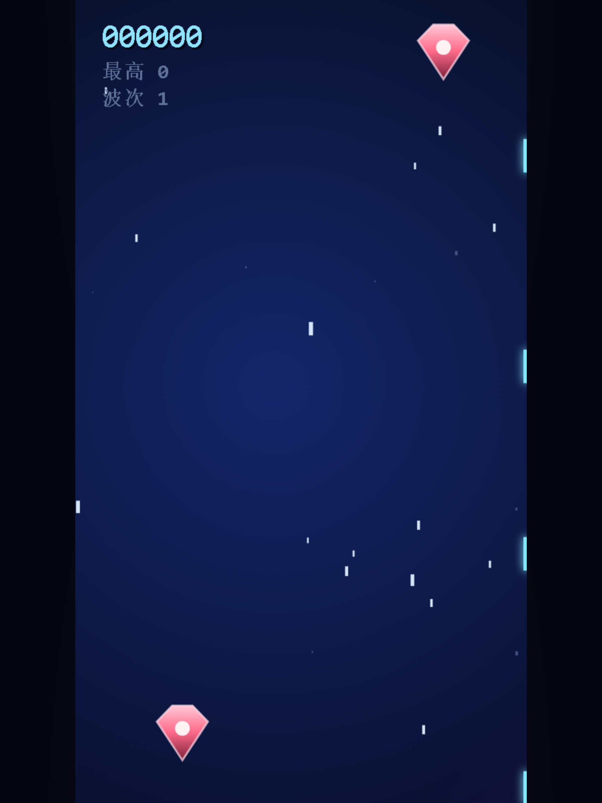
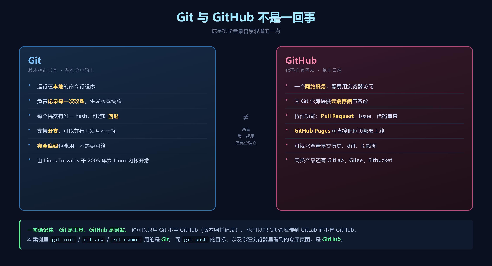
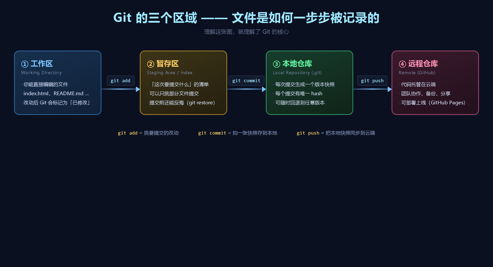
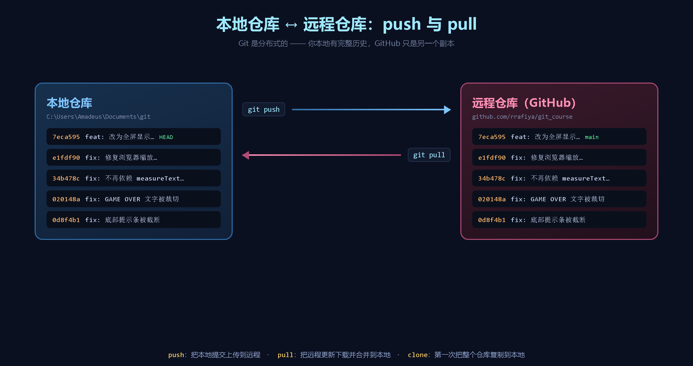
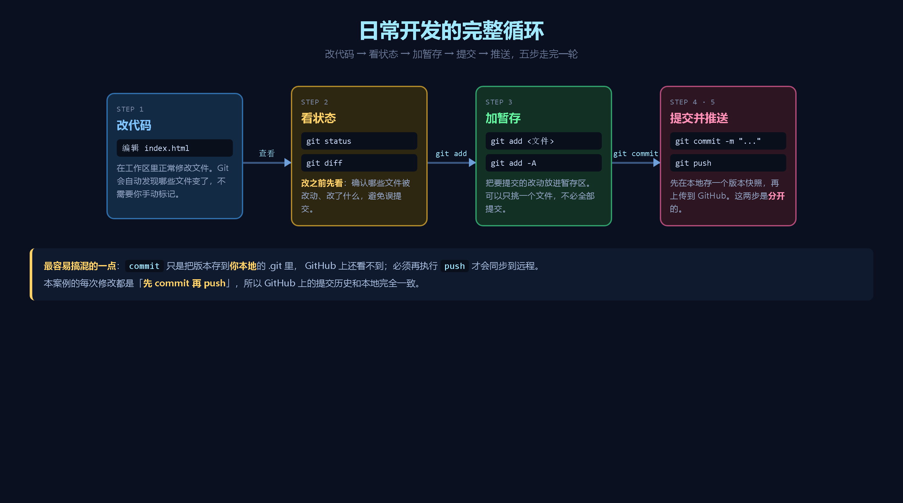
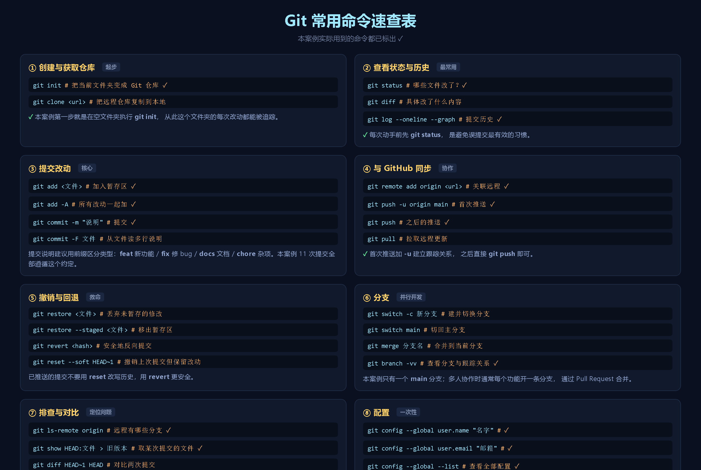
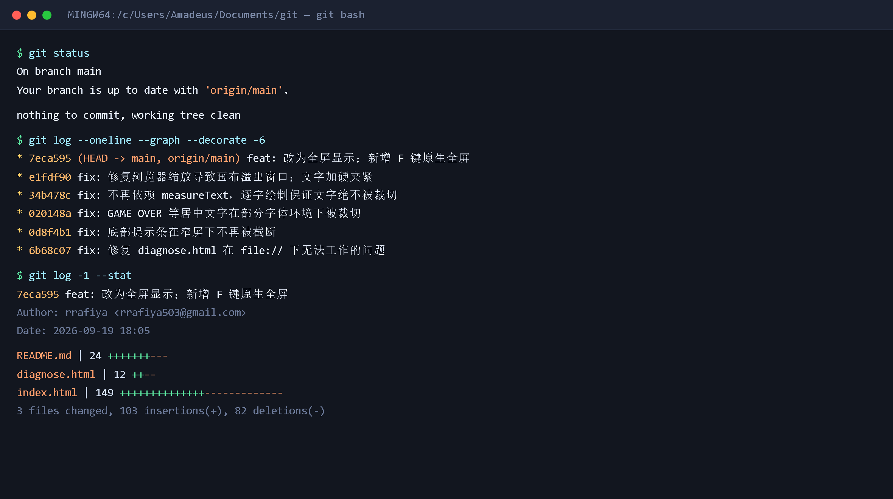
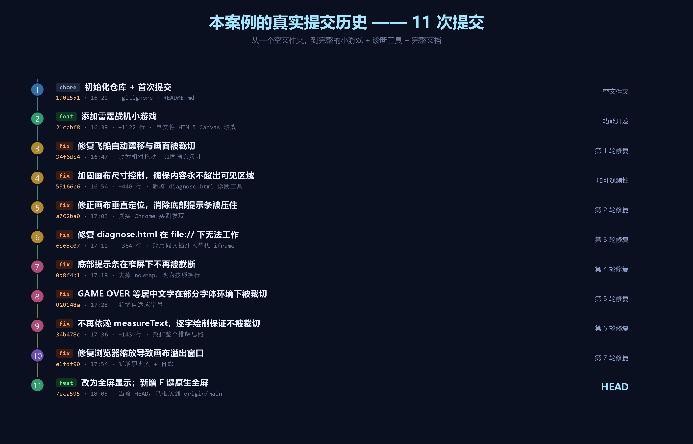
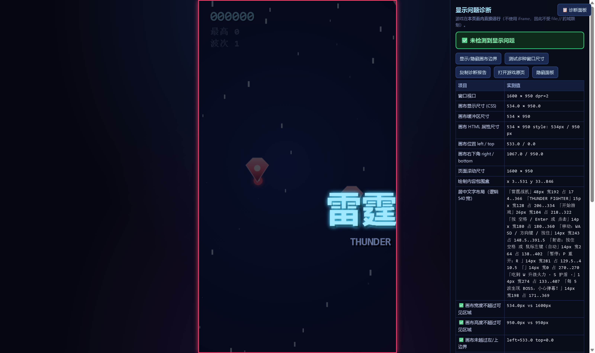
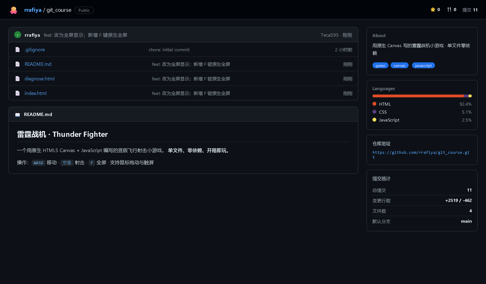

一个用原生 HTML5 Canvas 写的竖版飞行射击小游戏
◆单文件、零依赖，双击 index.html 就能玩
◆配套一个 diagnose.html 用于排查显示问题
◆整个开发过程每一步都做了版本控制
◆从空文件夹开始，共 11 次提交，全部推送到 GitHub
本 PPT 的所有截图与命令输出，都来自这个真实仓库。
以「雷霆战机」小游戏项目为完整案例






git init 会在当前目录创建隐藏的 .git 文件夹 —— 它就是版本库本体git commit 会直接报错（本案例一开始就是空配置，提交时才补上）-b main 指定主分支名为 main（GitHub 的默认约定）git push，Git 已记住推到哪里commit 之后 GitHub 上还看不到，必须 push 才同步git status 是最有效的防误提交习惯


git log 快速定位是哪次改动引入的feat 新功能 / fix 修 bug / docs 文档 / chore 杂项git commit -F 文件名 从文件读取多行说明git show HEAD:index.html 取出旧版本，git restore 文件名 —— 丢弃修改，恢复原样git restore --staged 文件名 —— 移出暂存区，改动仍保留git reset --soft HEAD~1 撤销提交但保留改动git revert <hash> —— 生成一次反向提交
git commit 直接报错。先跑 git config --globalgit push.gitignore 里先排除 .env、*.key